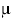

The probe affects the load on only those signals that are connected to the debug port connector. Loading depends on the method used to connect the probe to the target system.
The probe affects the target processor and target electrical characteristics. Caution should be taken in designing the target to accommodate the small signal delays associated with an in-circuit emulator or other test equipment.
The probe automatically supports target signal levels from 1.2V to 3.3V.
| Note | |
|
A probe tip draws less than 50  A from the target to detect target power. |
|